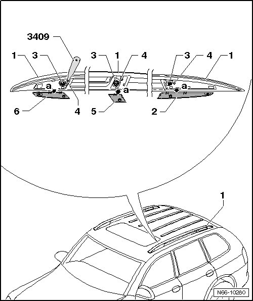
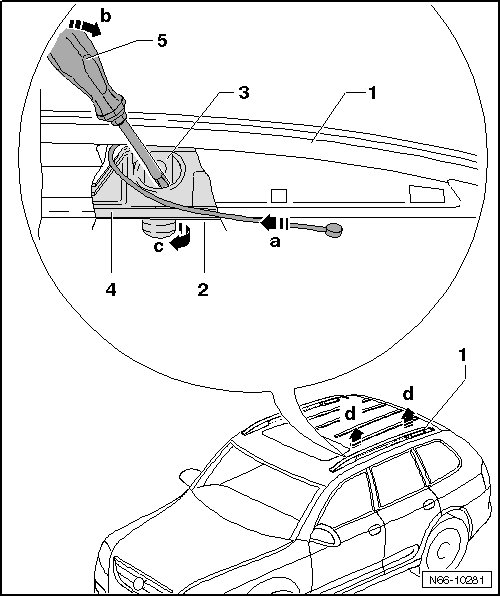
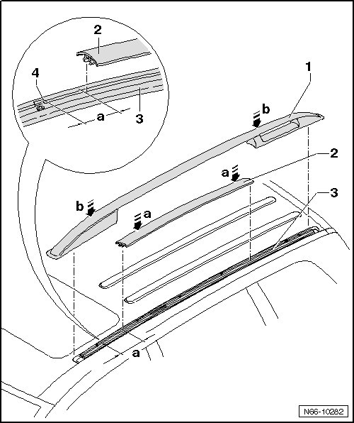
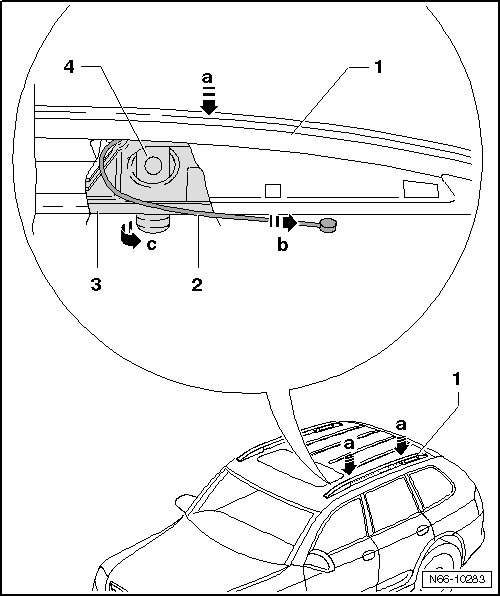
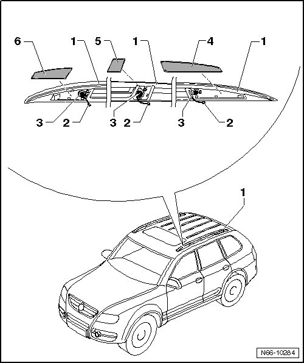

Roof Rail
eRoof Luggage Carrier
Roof Rail
Removing

- Pry cover caps - 2, 5 and 6 - out of retainers - 4 - with Trim Removal Wedge (3409).
- Tip cover caps out of mounts in roof rail - 1 - - a arrows -.
- Remove the bolts - 3 -.
• If pins - 3 - cannot turn, roof rail can also be pull upward forcefully - d arrows -.
• Before reinstalling roof rail, brackets must be removed from roof rail and bracket - 4 - must be assembled with pins - 3 - and tensioning strap - 2 -.

- Press strap - 2 - inward - arrow a - into roof rail, support rotation - arrow c - of pins - 3 - with a small screwdriver - 5 - in - direction of arrow b -.
- If all pins - 3 - are pivoted 90°, roof rail - 1 - can be removed upward - d arrows - from guide rail.
Installing

With cover strip removed
- On rear edge - 4 - of first threaded connection, accept - dimension a - of 23 mm.
- On this dimension, align cover strip - 2 - and press strip into guide rail - 3 - - a arrows -.
With cover strip installed
- Check seating of pins on bottom side of roof rail.
- Place roof rail - 1 - in guide rail - 2 - - b arrows -.

- Press - a arrows - roof rail - 1 - onto guide rail.
- Pull - arrow b - strap - 2 -, pins - 4 - in bracket - 3 - turn 90° - arrow c - when doing so.

- Tighten bolts - 3 -, tightening specification: 20 Nm.
- Lay straps - 2 - in roof rail.
- Engage cover caps - 4, 5 and 6 - in lower opening. Fold cover caps up and press them firmly in roof rail retainer - 1 -.